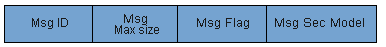

SNMPv3报文结构从功能上来说，与SNMPv1、SNMPv2c的区别主要增加了报头数据和安全参数。
| 字段 | 描述 |
|---|---|
| 版本 | 表示SNMP的版本，版本字段的值是报文版本号减1，如果是SNMPv3报文则对应字段值为3。 |
| 报头数据 | 主要包含消息发送者所能支持的最大消息尺寸、消息是否进行加密/认证、采用的安全模式等描述内容。 格式如下： 
|
| 安全参数 | 包含用户名、密钥、加密参数等安全信息。 格式如下：
|
| SNMPv3 PDU | 包含PDU类型、请求标识符、变量绑定列表等信息，可以为GetRequest PDU、GetNextRequest PDU、SetRequest PDU、Response PDU、Trap PDU、GetBulk PDU等几种类型。 格式如下：
|
| 标准 | 描述 |
|---|---|
| RFC 2570 | Introduction to Version 3 of the Internet-standard Network Management Framework |
| RFC 2574 | User-based Security Model (USM) for version 3 of the Simple Network Management Protocol (SNMPv3) |
| RFC 3414 | User-based Security Model (USM) for version 3 of the Simple Network Management Protocol (SNMPv3) |
| RFC 3584 | Coexistence between Version 1, Version 2, and Version 3 of the Internet-standard Network Management Framework |